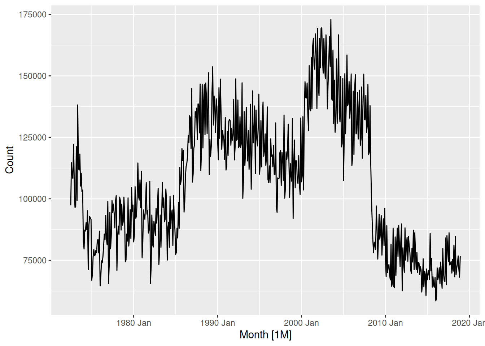
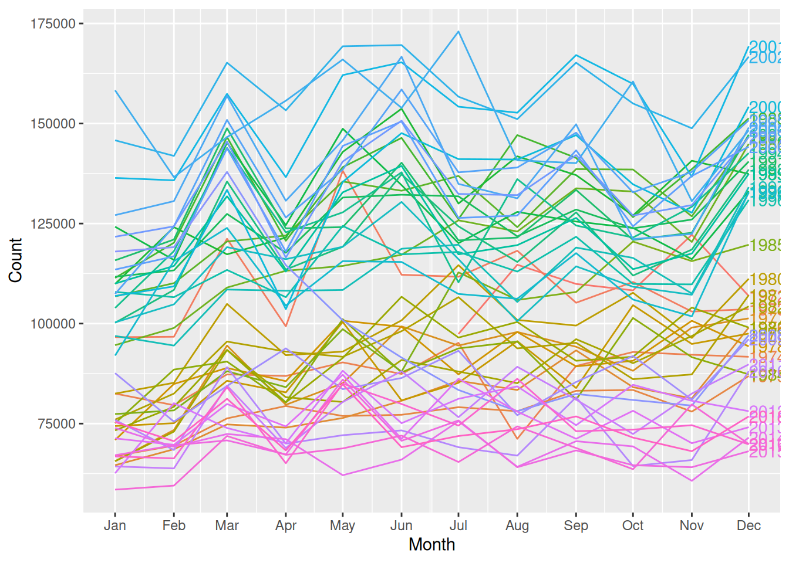
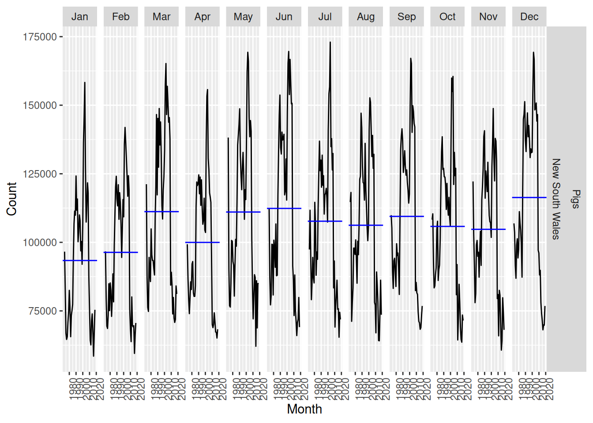
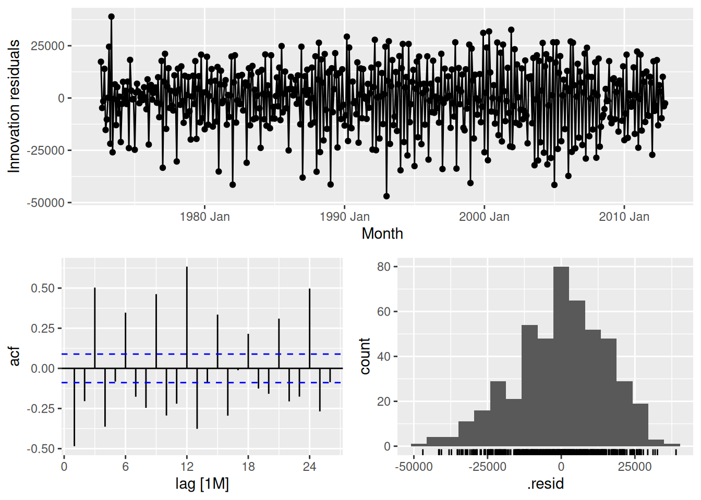
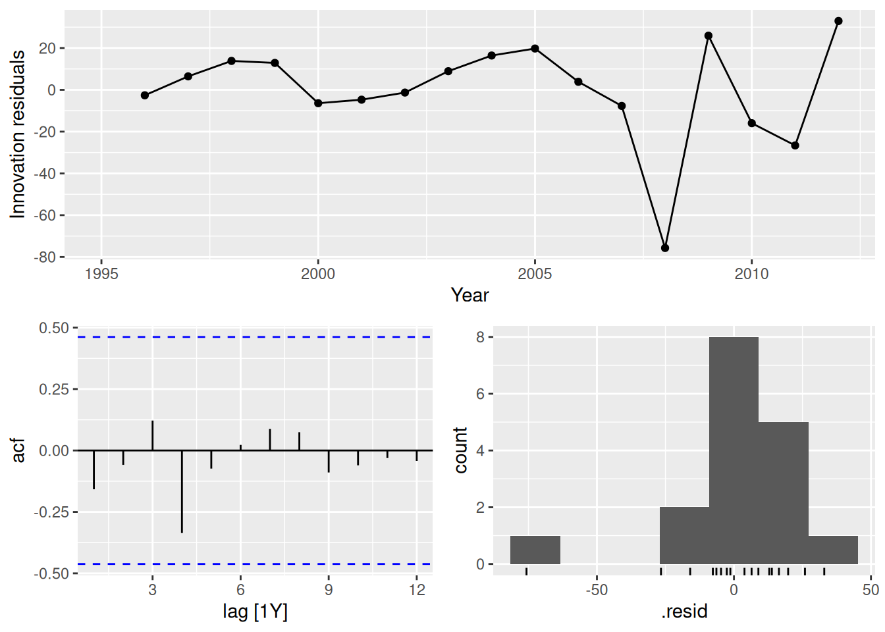
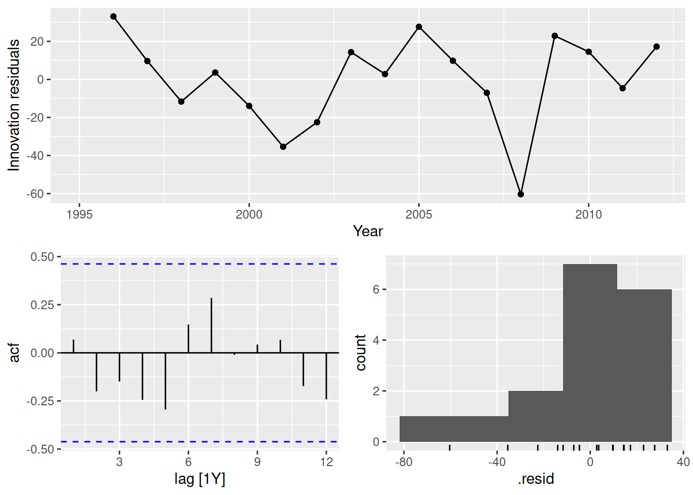
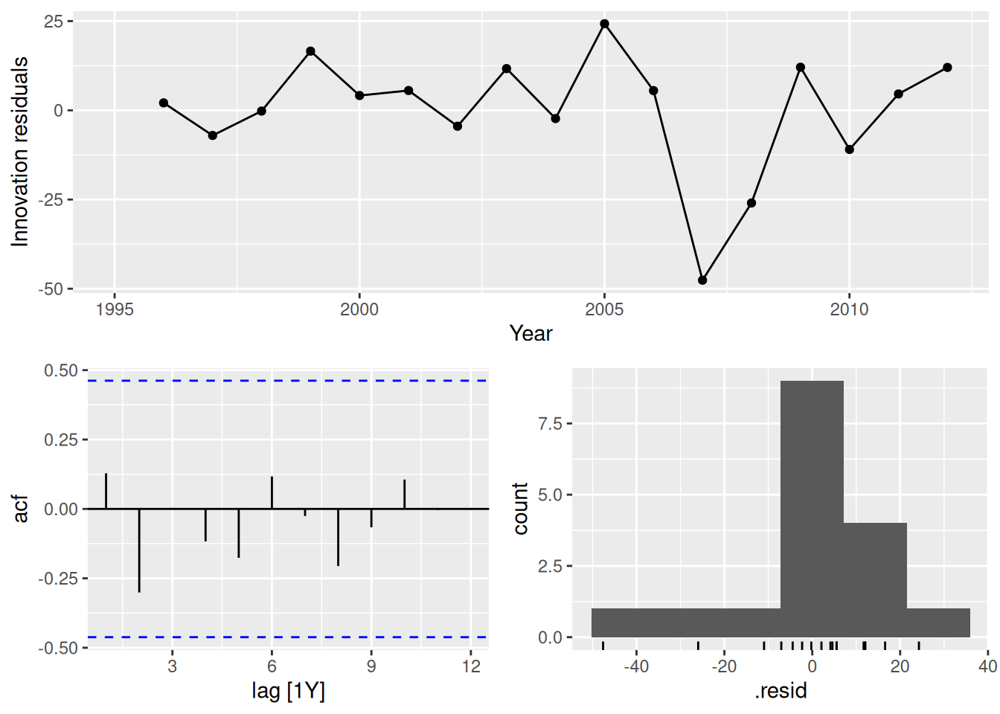
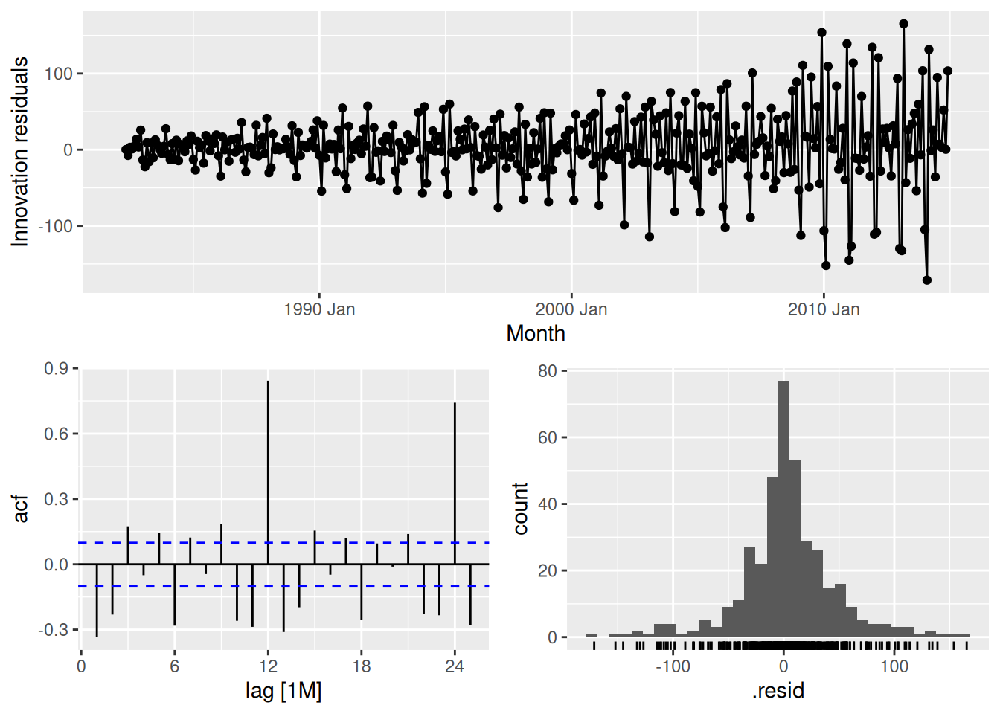
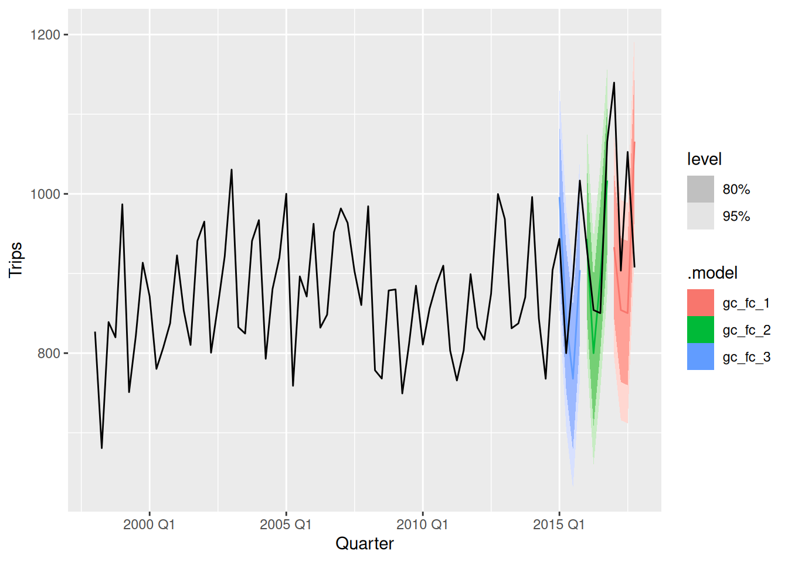

library(fpp3)Exercise Week 5: Solutions
fpp3 5.10, Ex 8
Consider the number of pigs slaughtered in New South Wales (data set
aus_livestock).
- Produce some plots of the data in order to become familiar with it.
nsw_pigs <- aus_livestock |>
filter(State == "New South Wales", Animal == "Pigs")
nsw_pigs |>
autoplot(Count)
Data generally follows a downward trend, however there are some periods where the amount of pigs slaughtered changes rapidly.
nsw_pigs |> gg_season(Count, labels = "right")
nsw_pigs |> gg_subseries(Count)
Some seasonality is apparent, with notable increases in December and decreases during January, February and April.
- Create a training set of 486 observations, withholding a test set of 72 observations (6 years).
nsw_pigs_train <- nsw_pigs |> slice(1:486)
- Try using various benchmark methods to forecast the training set and compare the results on the test set. Which method did best?
fit <- nsw_pigs_train |>
model(
mean = MEAN(Count),
naive = NAIVE(Count),
snaive = SNAIVE(Count),
drift = RW(Count ~ drift())
)
fit |>
forecast(h = "6 years") |>
accuracy(nsw_pigs)# A tibble: 4 × 12
.model Animal State .type ME RMSE MAE MPE MAPE MASE RMSSE
<chr> <fct> <fct> <chr> <dbl> <dbl> <dbl> <dbl> <dbl> <dbl> <dbl>
1 drift Pigs New South … Test -4685. 8091. 6967. -7.36 10.1 0.657 0.557
2 mean Pigs New South … Test -39360. 39894. 39360. -55.9 55.9 3.71 2.75
3 naive Pigs New South … Test -6138. 8941. 7840. -9.39 11.4 0.740 0.615
4 snaive Pigs New South … Test -5838. 10111. 8174. -8.81 11.9 0.771 0.696
# ℹ 1 more variable: ACF1 <dbl>The drift method performed best for all measures of accuracy (although it had a larger first order auto-correlation)
- Check the residuals of your preferred method. Do they resemble white noise?
fit |>
select(drift) |>
gg_tsresiduals()
The residuals do not appear to be white noise as the ACF plot contains many significant lags. It is also clear that the seasonal component is not captured by the drift method, as there exists a strong positive auto-correlation at lag 12 (1 year). The histogram appears to have a slightly long left tail.
fpp3 5.10, Ex 9
- Create a training set for household wealth (
hh_budget) by withholding the last four years as a test set.
train <- hh_budget |>
filter(Year <= max(Year) - 4)
- Fit all the appropriate benchmark methods to the training set and forecast the periods covered by the test set.
fit <- train |>
model(
naive = NAIVE(Wealth),
drift = RW(Wealth ~ drift()),
mean = MEAN(Wealth)
)
fc <- fit |> forecast(h = 4)
- Compute the accuracy of your forecasts. Which method does best?
fc |>
accuracy(hh_budget) |>
arrange(Country, MASE)# A tibble: 12 × 11
.model Country .type ME RMSE MAE MPE MAPE MASE RMSSE ACF1
<chr> <chr> <chr> <dbl> <dbl> <dbl> <dbl> <dbl> <dbl> <dbl> <dbl>
1 drift Australia Test 29.1 35.5 29.1 7.23 7.23 1.73 1.48 0.210
2 naive Australia Test 34.7 41.5 34.7 8.64 8.64 2.06 1.73 0.216
3 mean Australia Test 35.7 42.3 35.7 8.89 8.89 2.12 1.76 0.216
4 drift Canada Test 33.3 37.2 33.3 6.09 6.09 1.73 1.57 -0.229
5 naive Canada Test 46.2 51.0 46.2 8.46 8.46 2.40 2.15 -0.0799
6 mean Canada Test 90.4 92.9 90.4 16.7 16.7 4.69 3.92 -0.0799
7 drift Japan Test 14.7 17.9 14.7 2.44 2.44 0.943 0.967 -0.229
8 naive Japan Test 36.3 37.8 36.3 6.06 6.06 2.34 2.04 -0.534
9 mean Japan Test 100. 101. 100. 16.8 16.8 6.45 5.46 -0.534
10 drift USA Test 75.9 76.2 75.9 12.7 12.7 2.88 2.43 -0.561
11 naive USA Test 82.1 82.5 82.1 13.8 13.8 3.12 2.63 -0.423
12 mean USA Test 82.9 83.3 82.9 13.9 13.9 3.15 2.65 -0.423 fc |>
accuracy(hh_budget) |>
group_by(.model) |>
summarise(MASE = mean(MASE)) |>
ungroup() |>
arrange(MASE)# A tibble: 3 × 2
.model MASE
<chr> <dbl>
1 drift 1.82
2 naive 2.48
3 mean 4.10The drift method is better for every country, and on average.
- Do the residuals from the best method resemble white noise?
fit |>
filter(Country == "Australia") |>
select(drift) |>
gg_tsresiduals()
fit |>
filter(Country == "Canada") |>
select(drift) |>
gg_tsresiduals()
fit |>
filter(Country == "Japan") |>
select(drift) |>
gg_tsresiduals()
fit |>
filter(Country == "USA") |>
select(drift) |>
gg_tsresiduals()
In all cases, the residuals look like white noise.
fpp3 5.10, Ex 10
- Create a training set for Australian takeaway food turnover (
aus_retail) by withholding the last four years as a test set.
takeaway <- aus_retail |>
filter(Industry == "Takeaway food services") |>
summarise(Turnover = sum(Turnover))
train <- takeaway |>
filter(Month <= max(Month) - 4 * 12)
- Fit all the appropriate benchmark methods to the training set and forecast the periods covered by the test set.
fit <- train |>
model(
naive = NAIVE(Turnover),
drift = RW(Turnover ~ drift()),
mean = MEAN(Turnover),
snaive = SNAIVE(Turnover)
)
fc <- fit |> forecast(h = "4 years")
- Compute the accuracy of your forecasts. Which method does best?
fc |>
accuracy(takeaway) |>
arrange(MASE)# A tibble: 4 × 10
.model .type ME RMSE MAE MPE MAPE MASE RMSSE ACF1
<chr> <chr> <dbl> <dbl> <dbl> <dbl> <dbl> <dbl> <dbl> <dbl>
1 naive Test -12.4 119. 96.4 -1.49 6.66 2.30 2.25 0.613
2 drift Test -93.7 130. 108. -6.82 7.67 2.58 2.46 0.403
3 snaive Test 177. 192. 177. 11.7 11.7 4.22 3.64 0.902
4 mean Test 829. 838. 829. 55.7 55.7 19.8 15.8 0.613The naive method is best here.
- Do the residuals from the best method resemble white noise?
fit |>
select(naive) |>
gg_tsresiduals()
This is far from white noise. There is strong seasonality and increasing variance that has not been accounted for by the naive model.
fpp3 5.10, Ex 12
tourismcontains quarterly visitor nights (in thousands) from 1998 to 2017 for 76 regions of Australia.
- Extract data from the Gold Coast region using
filter()and aggregate total overnight trips (sum overPurpose) usingsummarise(). Call this new datasetgc_tourism.
gc_tourism <- tourism |>
filter(Region == "Gold Coast") |>
summarise(Trips = sum(Trips))
gc_tourism# A tsibble: 80 x 2 [1Q]
Quarter Trips
<qtr> <dbl>
1 1998 Q1 827.
2 1998 Q2 681.
3 1998 Q3 839.
4 1998 Q4 820.
5 1999 Q1 987.
6 1999 Q2 751.
7 1999 Q3 822.
8 1999 Q4 914.
9 2000 Q1 871.
10 2000 Q2 780.
# ℹ 70 more rows
- Using
slice()orfilter(), create three training sets for this data excluding the last 1, 2 and 3 years. For example,gc_train_1 <- gc_tourism |> slice(1:(n()-4)).
gc_train_1 <- gc_tourism |> slice(1:(n() - 4))
gc_train_2 <- gc_tourism |> slice(1:(n() - 8))
gc_train_3 <- gc_tourism |> slice(1:(n() - 12))
- Compute one year of forecasts for each training set using the seasonal naïve (
SNAIVE()) method. Call thesegc_fc_1,gc_fc_2andgc_fc_3, respectively.
gc_fc <- bind_cols(
gc_train_1 |> model(gc_fc_1 = SNAIVE(Trips)),
gc_train_2 |> model(gc_fc_2 = SNAIVE(Trips)),
gc_train_3 |> model(gc_fc_3 = SNAIVE(Trips))
) |> forecast(h = "1 year")gc_fc |> autoplot(gc_tourism)
- Use
accuracy()to compare the test set forecast accuracy using MAPE. Comment on these.
gc_fc |> accuracy(gc_tourism)# A tibble: 3 × 10
.model .type ME RMSE MAE MPE MAPE MASE RMSSE ACF1
<chr> <chr> <dbl> <dbl> <dbl> <dbl> <dbl> <dbl> <dbl> <dbl>
1 gc_fc_1 Test 75.1 167. 154. 6.36 15.1 2.66 2.36 -0.410
2 gc_fc_2 Test 12.0 43.1 39.5 1.14 4.32 0.670 0.599 -0.792
3 gc_fc_3 Test 35.8 91.4 83.9 3.56 9.07 1.46 1.30 0.239The second set of forecasts are most accurate (as can be seen in the previous plot), however this is likely due to chance.